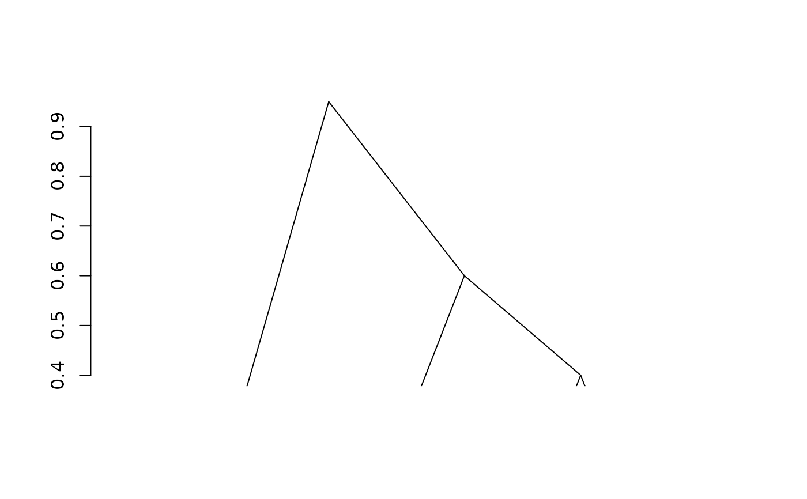
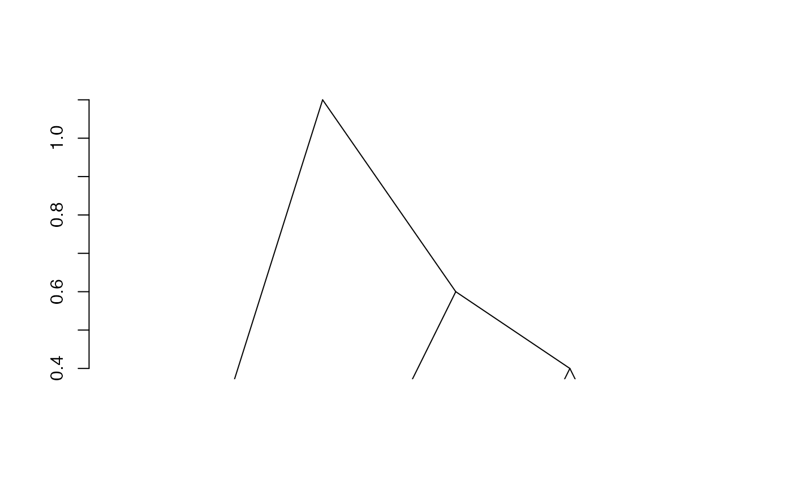

Adjacency-constrained hierarchical agglomerative clustering
Arguments
- mat
A similarity matrix or a dist object. Most sparse formats from
sparseMatrixare allowed- type
Type of matrix : similarity or dissimilarity. Defaults to
"similarity"- h
band width. It is assumed that the similarity between two items is 0 when these items are at a distance of more than band width h. Default value is
ncol(mat)-1- strictCheck
Logical (default to
TRUE) to systematically check default of positivity in input similarities. Can be disabled to avoid computationally expensive checks when the number of features is large.
Value
An object of class chac which describes the tree
produced by the clustering process. The object is a list with the same
elements as an object of class hclust (merge,
height, order, labels, call, method,
dist.method), and two extra elements:
mat: (the data on which the clustering has been performed, possibly after the pre-transformations described in the vignette entitled "Notes on CHAC implementation in adjclust"
.
correction: the value of the correction for non positive definite similarity matrices (also described in the same vignette). If
correction == 0, it means that the initial data were not pre-transformed.
Details
Adjacency-constrained hierarchical agglomerative clustering (HAC) is HAC in which each observation is associated to a position, and the clustering is constrained so as only adjacent clusters are merged. These methods are useful in various application fields, including ecology (Quaternary data) and bioinformatics (e.g., in Genome-Wide Association Studies (GWAS)).
This function is a fast implementation of the method that takes advantage of
sparse similarity matrices (i.e., that have 0 entries outside of a diagonal
band of width h). The method is fully described in (Dehman, 2015) and
based on a kernel version of the algorithm. The different options for the
implementation are available in the package vignette entitled
"Notes on CHAC implementation in adjclust.
Note
When performed on a distance matrix \(d\) with the option
type = "dissimilarity", adjclust is identical to using the
option "ward.D" on \(d^2\) in the function
hclust when the ordering of the (unconstrained)
clustering (in hclust) is compatible with the natural
ordering of objects used as a constraint. It is also equivalent (under the
same assumption or orderings) to the option "ward.D2" performed on the
distance matrix \(d\) itself, except for the final heights of the merges
that are equal to the square of the heights obtained with "ward.D2" in
hclust. See the
vignette on implementation
and (Murtagh and Legendre, 2014) for further details.
References
Murtagh F., and Legendre P. (2014). Ward's hierarchical agglomerative clustering method: which algorithms implement Ward's criterion? Journal of Classification, 31, 274-295. DOI: doi:10.1007/s00357-014-9161-z .
Dehman A. (2015). Spatial Clustering of Linkage Disequilibrium Blocks for Genome-Wide Association Studies, PhD thesis, Universite Paris Saclay, France.
Ambroise C., Dehman A., Neuvial P., Rigaill G., and Vialaneix N (2019). Adjacency-constrained hierarchical clustering of a band similarity matrix with application to genomics. Algorithms for Molecular Biology, 14(22). DOI: doi:10.1007/s11222-018-9806-6 .
Randriamihamison N., Vialaneix N., and Neuvial P. (2020). Applicability and interpretability of Ward's hierarchical agglomerative clustering with or without contiguity constraints. Journal of Classification, 38, 1-27. DOI: doi:10.1007/s00357-020-09377-y .
Examples
sim <- matrix(
c(1.0, 0.1, 0.2, 0.3,
0.1, 1.0 ,0.4 ,0.5,
0.2, 0.4, 1.0, 0.6,
0.3, 0.5, 0.6, 1.0), nrow = 4)
## similarity, full width
fit1 <- adjClust(sim, "similarity")
plot(fit1)

## similarity, h < p-1
fit2 <- adjClust(sim, "similarity", h = 2)
plot(fit2)

## dissimilarity
dist <- as.dist(sqrt(2-(2*sim)))
## dissimilarity, full width
fit3 <- adjClust(dist, "dissimilarity")
plot(fit3)
## dissimilarity, h < p-1
fit4 <- adjClust(dist, "dissimilarity", h = 2)
plot(fit4)